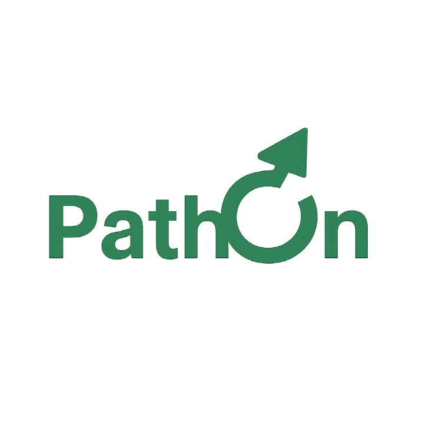
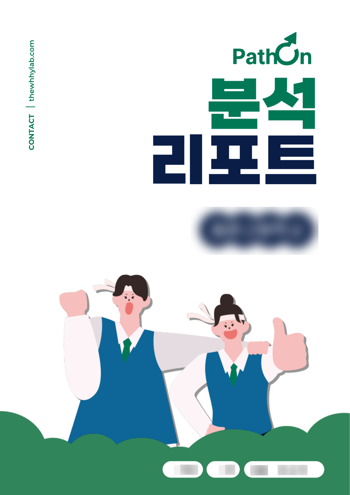
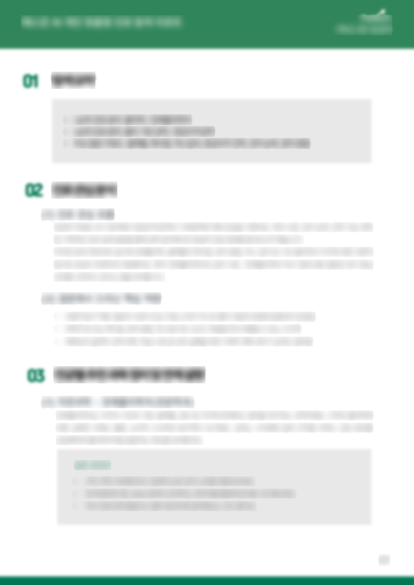
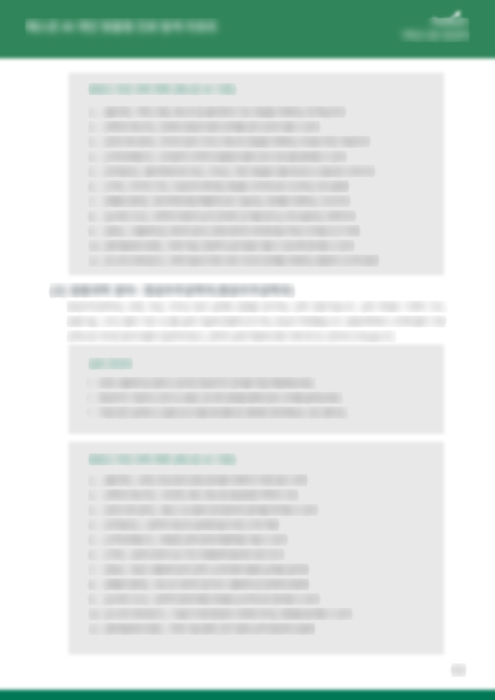
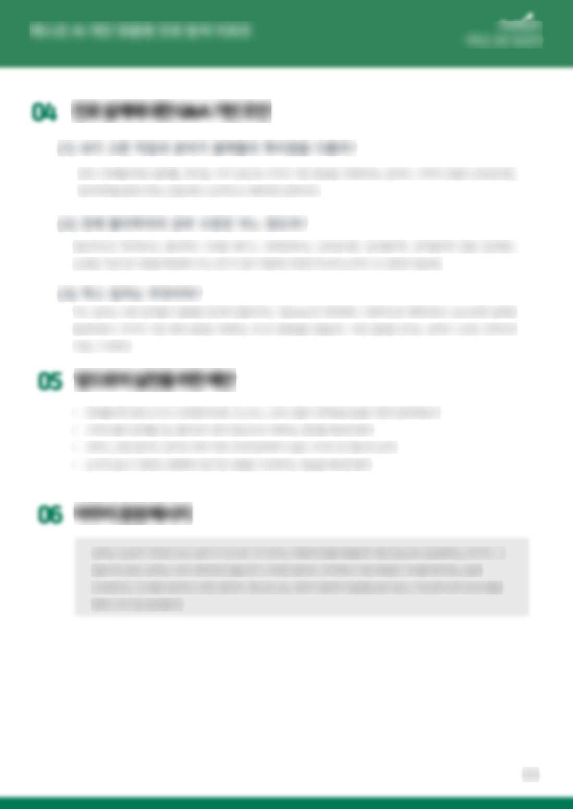

지어내지 않는 AI
추천 학과·선택과목은 대입 및 교육과정 전문가의 검수를 거친 RAG 방식으로 안내합니다. 존재하지 않는 학과나 과목을 만들어내지 않아, 학생이 잘못된 정보를 받을 일이 없습니다.
PathOn(패스온)은 고등학생이 관심 분야부터 직업·전공·선택과목까지 한 단계씩 짚어가며 스스로 진로를 설계하는 대화형 AI 진로 탐색 챗봇입니다. 탐색이 끝나면 학생 한 명 한 명에게 맞춤 분석 리포트가 제공됩니다.

AI 진로 탐색 챗봇추천 학과·선택과목은 대입 및 교육과정 전문가의 검수를 거친 RAG 방식으로 안내합니다. 존재하지 않는 학과나 과목을 만들어내지 않아, 학생이 잘못된 정보를 받을 일이 없습니다.
분야부터 과목까지 차근차근 짚어가는 가이드와, 학생의 궁금증에 맞춰 맥락을 이어받아 답하는 자유 상담을 함께 제공합니다.
학생이 고른 학과의 추천 선택과목을 우리 학교의 교육과정 편제 안에서만 안내합니다. 진로와 실제 과목 선택이 끊김 없이 이어집니다.
대화형 단계 탐색 · 모바일에서 누구나 쉽게
| 단계 | 학생이 하는 것 | 얻게 되는 것 |
|---|---|---|
| 관심 분야 선택 | 5개 분야 중 설명을 보고 흥미가 가는 분야를 고릅니다. | 막연한 흥미를 진로 탐색의 출발점으로 구체화 |
| 세부 분야 좁히기 | 고른 분야 안에서 더 관심 가는 세부 영역으로 들어갑니다. | 흥미의 방향을 한층 또렷하게 정리 |
| 직업 탐색 | 직업사전으로 하는 일·전망·대표 분야·관련 학과를 살펴봅니다. | 직업을 '느낌'이 아닌 정보로 이해 |
| 전공·학과 연결 | 관심 직업과 이어지는 전공·학과를 확인합니다. | 진로와 진학을 잇는 경로 발견 |
| 선택과목 + 자유상담 | 우리 학교 교육과정 기반 추천 과목을 받고 자유롭게 질문합니다. | 당장 실천할 수 있는 과목 선택 가이드 |
어려운 진로 검사 대신, 가볍게 흥미를 고르는 것에서 출발합니다.
인문사회
말·글·사람·사회·역사 — 사람과 사회에 대한 이야기를 다루는 분야
경영경제
돈·회사·전략 — 돈이 어떻게 움직이고 조직을 어떻게 이끄는지 배우는 분야
자연과학
수·자연·생명·실험 — 세상과 자연의 원리를 깊이 파고드는 분야
응용과학
기술·코딩·기계·의학 — 과학을 실제 기술로 써먹는 분야
예체능·뷰티·푸드
감각·몸·기술로 사람들에게 즐거움과 편리함을 주는 분야
대화가 끝나면 끝이 아닙니다. 탐색 과정을 학생별 리포트로 정리해 전달합니다.

학생 한 명 한 명의 대화를 바탕으로, 흥미가 어떻게 흘러갔는지부터 추천 직업·학과, 학교 교육과정 기반 추천 과목, 그리고 다음에 무엇을 해보면 좋을지까지 한 권으로 정리해 드립니다.



* 실제 제공 리포트 예시입니다. 학생 개인정보와 상세 내용은 비공개 처리했습니다.
학생의 휴대폰·태블릿·PC 어디서나 웹으로 바로 접속해 말풍선 대화로 진행합니다. '홈 화면에 추가'(PWA)로 앱처럼 쓸 수 있습니다.
학교 전용 접속 코드를 입력해야 시작됩니다. 외부 무단 사용을 막고, 코드는 필요할 때 손쉽게 변경할 수 있습니다.
유료 프로그램으로, 학교 상황에 맞춰 안내해 드립니다.
문의하기 →